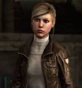
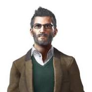

Informacion de los personajes
Desmond Miles
Desmond Miles es un personaje ficticio de la franquicia de videojuegos Assassin's Creed de Ubisoft. Presentado como el protagonista de las secciones modernas del primer juego de la serie.
Lucy Stillman
Fue la deuteragonista central de la franquicia Assassin's Creed . Ella era una asesina que tenía la tarea de infiltrarse en Industrias Abstergo bajo Warren Vidic, y trabajó con él en el proyecto Animus. Sin embargo, Lucy cambiaría de bando con los Templarios, creyendo que querían orden y trabajaba como agente doble cuando ella y Desmond escaparon de Abstergo. Lucy finalmente fue asesinada cuando Desmond fue influenciado por Juno, quien sabía de su verdadera lealtad, lo que llevó a Desmond a detener a Vidic.
Shaun Hastings
Shaun Hastings es miembro de la Hermandad de Asesinos que brinda orientación táctica a numerosos equipos de Asesinos en todo el mundo. Su apoyo a menudo está dirigido a los Asesinos que están en el campo, ofreciendo ocasionalmente asistencia en forma de mensajes transmitidos desde un mando superior.